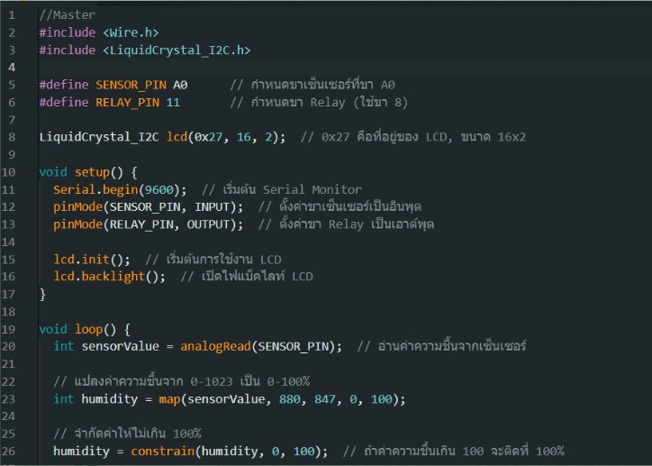
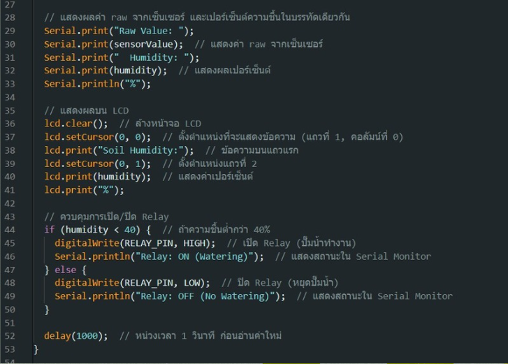

ระบบให้น้ำอัตโนมัติขนาดเล็กเป็นระบบขนาดเล็กที่ช่วยควบคุมการรดน้ำต้นไม้อัตโนมัติเหมาะสำหรับกระถางต้นไม้เล็ก ๆ โดยสามารถใช้เซนเซอร์ตรวจจับความชื้นในดินเพื่อบังคับให้ปั๊มน้ำเปิด-ปิดน้ำตามความเหมาะสมของระบบให้น้ำอัตโนมัติขนาดเล็ก เป็นระบบที่ช่วยในการควบคุมการรดน้ำต้นไม้อัตโนมัติให้เหมาะสำหรับกระถางต้นไม้ขนาดเล็กไปถึงกลาง
ภาษา: Python
เครื่องมือ: Arduino IDE
โค้ดหน้าแรกใน Arduino IDE
โค้ดต่อจากหน้าแรก
วีดีโอการทำงานของเครื่องมือ IOT